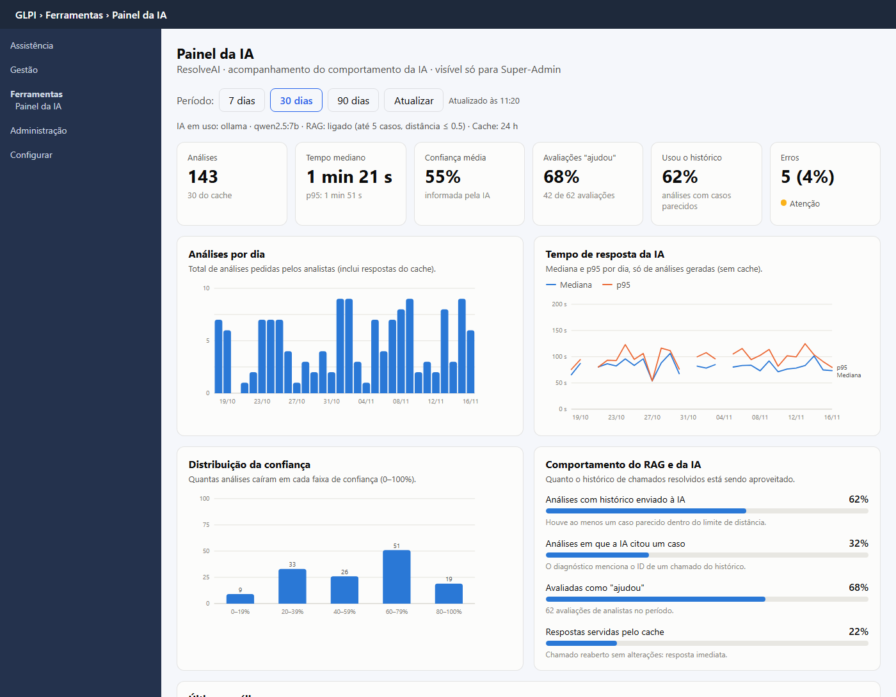

🔁 Chamados repetitivos
Wi-Fi caindo, impressora travada, senha expirada… A solução muitas vezes já existe, registrada em um chamado de meses atrás.
Inteligência artificial + suporte de TI
O ResolveAI lê o chamado que o analista acabou de abrir, encontra chamados parecidos que já foram resolvidos e sugere um diagnóstico, um nível de confiança e passos de teste, direto na tela do GLPI.
Equipes de suporte resolvem o mesmo tipo de problema muitas vezes, mas o conhecimento fica espalhado em chamados antigos.
Wi-Fi caindo, impressora travada, senha expirada… A solução muitas vezes já existe, registrada em um chamado de meses atrás.
Encontrar o caso certo exige busca manual por palavras-chave, que falha quando cada pessoa descreve o problema de um jeito.
Quando quem resolveu sai da equipe, a experiência vai junto. O histórico existe, mas não é aproveitado.
O ResolveAI combina busca por significado no histórico com uma IA generativa que escreve a sugestão. A decisão continua sempre com o analista.
Periodicamente, o ResolveAI lê os chamados solucionados ou fechados do GLPI (com as soluções e os acompanhamentos), limpa o texto (HTML, assinaturas de e-mail) e guarda cada caso numa base vetorial (ChromaDB). Ele só lê o banco, numa conta somente leitura.
No GLPI, o robô do ResolveAI fica no canto da tela. Ao abrir um chamado, ele se expande e pede a análise. O plugin confere antes se a pessoa está logada, se é analista e se tem permissão para ler aquele chamado.
O título e a descrição viram um "vetor de significado", e a base devolve os chamados resolvidos mais próximos, sempre dentro da mesma entidade do chamado. Casos pouco parecidos são descartados por um limite de distância, para não confundir a IA.
A IA recebe o chamado e os casos relevantes, com instruções rígidas: usar apenas os fatos fornecidos, separar evidência de hipótese, citar o número dos casos usados, sugerir só testes seguros e declarar quando não há histórico semelhante. A resposta sai em JSON validado, sempre no mesmo formato.
O painel mostra o diagnóstico, a confiança numa barra colorida e os passos de teste. O analista decide o que fazer e pode marcar 👍 Ajudou ou 👎 Não ajudou. Essa avaliação alimenta o painel de acompanhamento da IA.

qwen2.5:7b para um chamado de teste ("coletores caindo da rede no galpão novo"). A IA encontrou o chamado #1, que teve o mesmo sintoma, e sugeriu verificar interferência entre access points.RAG (Retrieval-Augmented Generation, ou "geração aumentada por recuperação") é um jeito de fazer a IA consultar o arquivo antes de responder.
Sem RAG, um modelo de IA responde só com o que aprendeu no treinamento. Ele não conhece a sua rede, os seus sistemas nem os problemas que a sua equipe já resolveu, e pode "inventar" uma resposta plausível.
Com RAG, antes de escrever, a IA recebe os trechos mais relevantes da sua própria base. É como um técnico experiente que, antes de opinar, abre os chamados antigos parecidos e diz: "já vimos isso no chamado #1, foi interferência entre access points; vale conferir o canal".
"coletor cai da rede" não encontra "coletor perde a conexão Wi-Fi".
Os dois textos ficam próximos no "espaço de significado", e o caso antigo é encontrado mesmo com palavras diferentes.
O que os fatos indicam, separando evidência de hipótese e citando os chamados do histórico que embasam a sugestão.
Um número de 0 a 100 com justificativa. Ele cai quando faltam dados ou não há caso parecido, e a IA é orientada a não "inflar" a confiança.
Verificações numeradas, objetivas e de baixo risco. Sem comandos destrutivos e sem afirmar que algo já foi testado.
IA em suporte de TI lida com dados de clientes e de infraestrutura. Estes cuidados fazem parte do projeto desde o começo:
Padrão · gratuito
Modelos abertos, como o qwen2.5:7b, rodando no seu servidor. Sem custo por uso e sem enviar dados para fora. Com GPU responde em segundos; só no processador, em 1 a 2 minutos.
Opcional · pago por uso
Para quem quer mais qualidade e respostas rápidas. Basta trocar uma variável de configuração e informar a chave da API.
Testes
Só lista os chamados parecidos encontrados. Útil para validar a integração com o GLPI antes de ligar a IA.
Dentro do próprio GLPI, em Ferramentas → Painel da IA, quem é Super-Admin acompanha se a IA está ajudando de verdade, sem senha extra:

O "cérebro" do ResolveAI não depende do GLPI. Ele conversa com qualquer ferramenta de chamados por meio de conectores; o GLPI é só a primeira integração.
Plataformas
GLPI Zammad · osTicket Jira SM · Freshservice · ServiceNowConectores
Conector GLPI Novos conectoresNúcleo ResolveAI
Modelos neutros Busca + análise Telemetria + painelAdaptadores
ChromaDB (RAG) Ollama · ClaudeLinhas tracejadas: integrações planejadas.